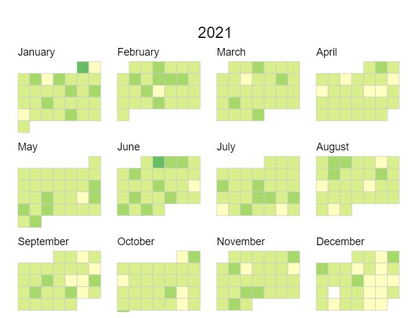
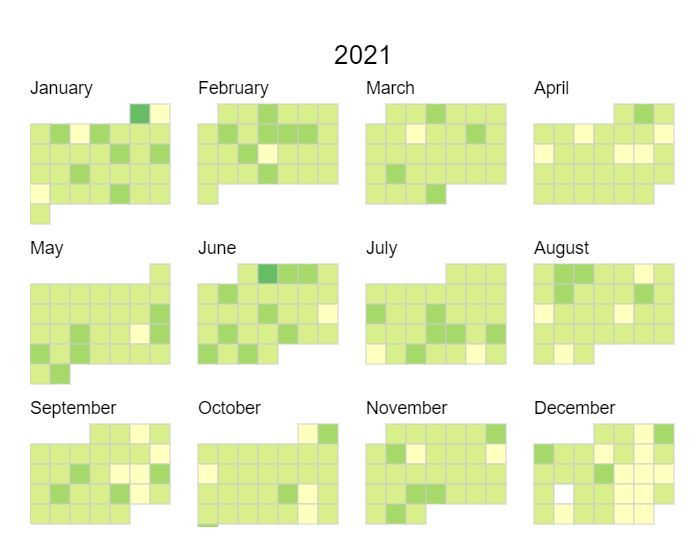
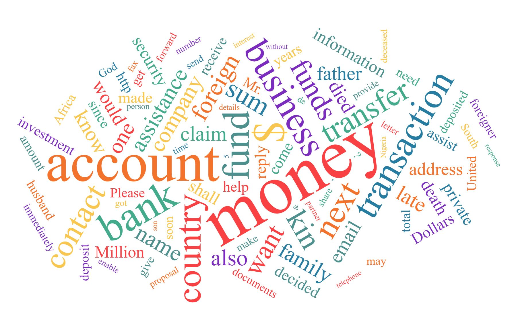
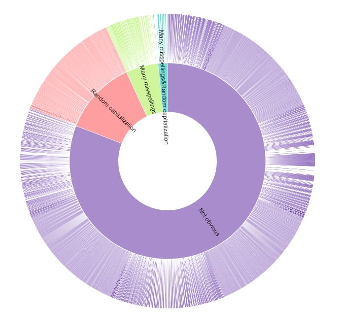
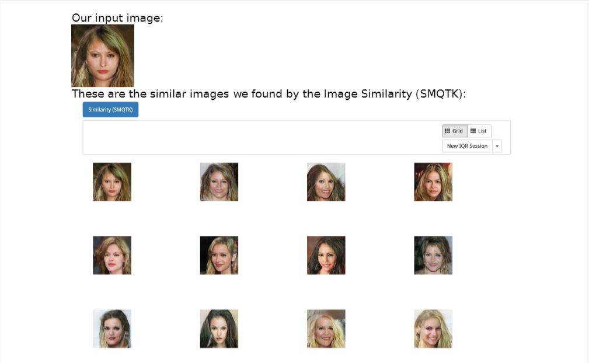

Phishing Emails Frequency Prediction
Predict occurance and frequency of phishing emails
Calendar View
A calendar view of phishing emails frequency prediction
Visualizations are graphical representations of data.They help people communicate ideas and make informeddecisions.Visualizations are key for analyzing complex data anddemonstrating the insights gained from it.In this assignment we summarize the work donein Assignment 1 and Assignment 2 with the help ofvisualizations.
The visualizations and insights have also been added to a website for easier access using GitHub pages.
It has been added under the Team 4 Link:
https://shruti-kk.github.io/ufo.usc.edu/html/team_4.html

Predict occurance and frequency of phishing emails
A calendar view of phishing emails frequency prediction

Plotting Attackers Locations on the World Map
The Bubble map visualizes number of attackers claiming to be from a particular country. The bigger the size of the bubble the higher the number of attacks.

Plotting attack frequency at different times in a day using a stacked bar plot visualization
A stacked bar plot visualizing phishing attacks frequency at different times in a day. The attacks are categorized based on urgency.

A word cloud to depict the most frequent words used in phishing emails
A word cloud to depict the most frequent words used in phishing emails. The words with higher frequency occupy more area on the cloud

A sun burst to depict the misspellings and capitalization in phishing emails
A sun burst to depict language styles of phishing emails
A word cloud to depict the most frequent words used in subject of reconnaissance emails
A word cloud to depict the most frequent words used in subject of reconnaissance emails. The words with higher frequency occupy more area on the cloud
The Image Space allows us to search similar images with the image in hand, or search images based on metadata by just inputting a keyword. Below is an example of what we found.

With the help of the Image Space, we could easily search for similar images that might not be easy to discern without the tool, especially when trying to find similar ones within a large number of images.